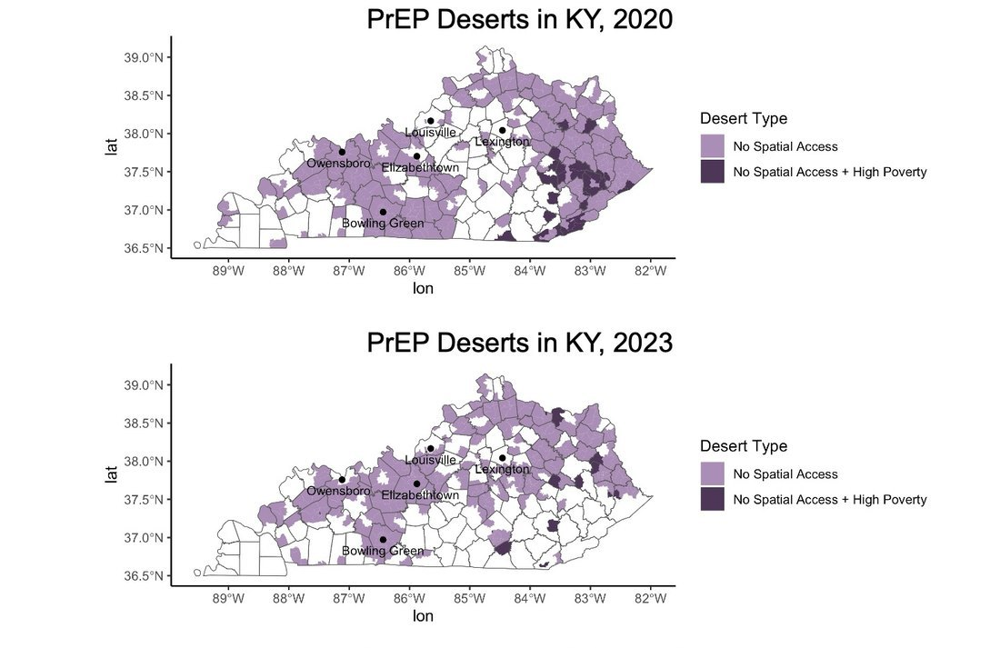

The Changing Landscape of PrEP Deserts in the United States
Pre-exposure prophylaxis (PrEP) is a critical intervention that greatly reduces the risk of HIV transmission, yet limited access to prescribing providers continues to constrain uptake in the United States. This study examines how geographic access to PrEP providers changed between 2020 and 2023 and identifies areas with limited access, referred to as PrEP deserts. Using the Integrated two-step floating catchment area method, this study finds that despite widespread gains in PrEP access, five states experienced increases in the total population living in PrEP deserts. Additionally, more than 5 million residents in states designated as priority jurisdictions under the Ending the HIV epidemic initiative gained geographic access to PrEP providers between 2020 and 2023. However, improvements were uneven: in some states, communities of colour experienced declining access and remain disproportionately represented in PrEP deserts. These findings highlight persistent geographic and demographic disparities in HIV prevention infrastructure despite recent federal efforts to expand PrEP availability.
